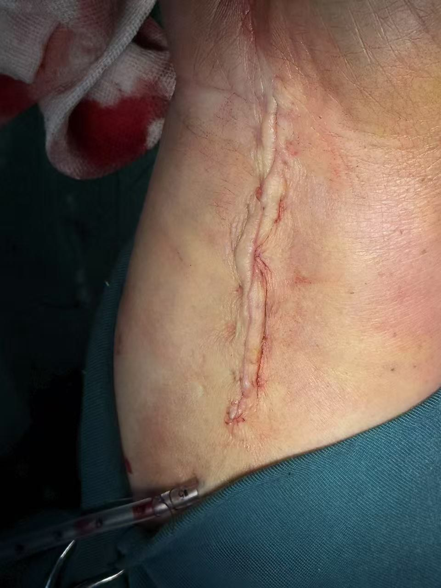

嘉茵頤縫 · JIAYIN SUTURE
返回分類
04 · Orthopedic Surgery
骨科手術
收錄鎖骨、關節、膝蓋等部位的臨床案例與縫合示範，以及橈骨內側的圖片說明。
鎖骨 － 臨床案例
Clavicle · Clinical Case
關節處縫合示範
Joint Suture · Demonstration
膝蓋關節 － 臨床案例
Knee Joint · Clinical Case

橈骨內側
Medial Radius · Photo